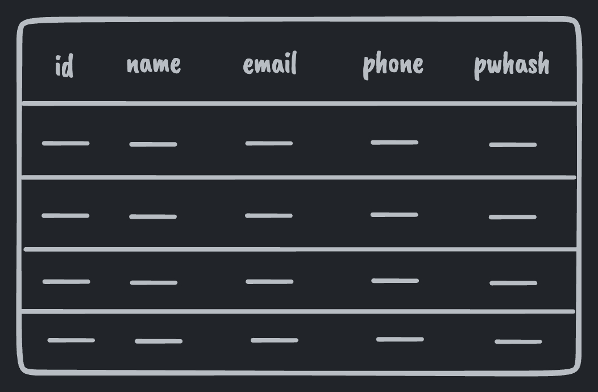
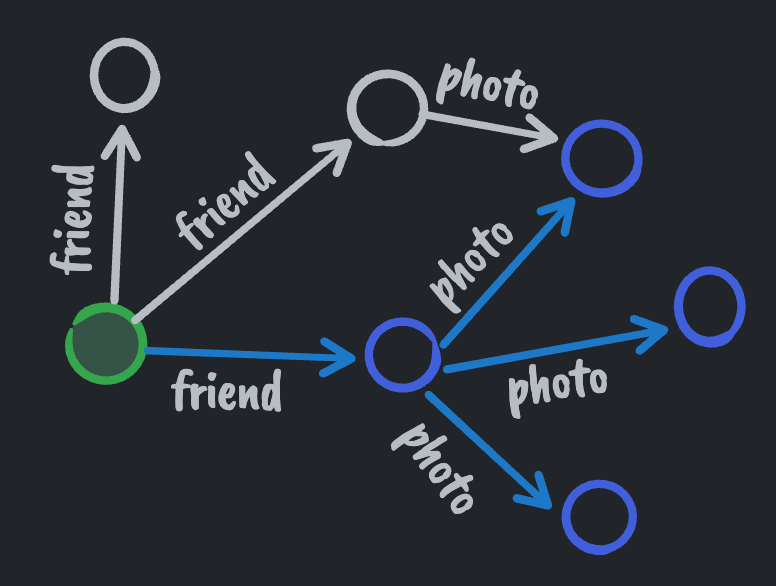
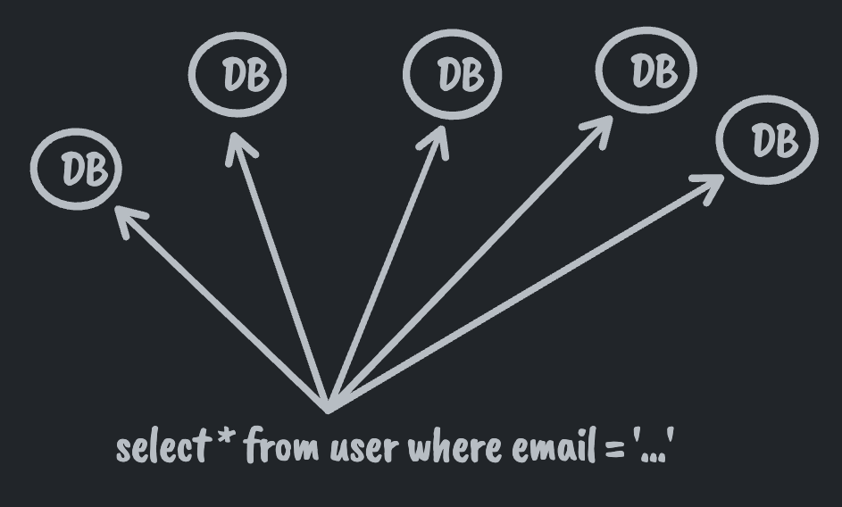
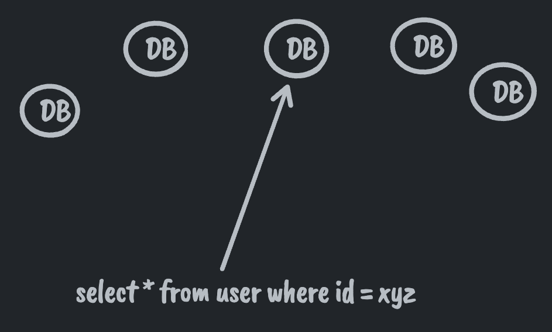

Meta / Facebook - How a graph model can scale your relational DBs
Published 2022-10-19Did you know that still, to this day, the majority of Meta's data needs are serviced by MySQL?
There is a caching layer atop it (called TAO) that services all queries, sending requests to MySQL only on a cache miss but what enabled TAO and MySQL to scale to servicing 2.88 billion daily active users was the adoption of a graph model for data access.
Graph vs Relational
Graph vs Relational can be a hard distinction to draw. At the end of the day, doesn't a relational database have nodes (rows) and edges (foreign keys) just like a graph?
Isn't a "graph" just some abstract term that fits all data? Documents, like JSON, are trees which are just graphs. We already saw that a relational model can be a graph too.
The differences come out in the data access patterns allowed by each model.
Relational Data Access
No Entry Point Required
The relational model groups all data of the same type into tables. This allows one to query for any piece of data of a given type that matches some criteria. In other words, you don't need an entry point (row id or primary key) to start fetching data.

select * from user;
Relational models also allow arbitrary indices. I.e., you can look up rows by things other than their primary key. Worst case, a full table scan is always available to you.
Reach Anything
Relational models are almost always normalized, allowing you to "reach anything." If you have the primary key for some row you can always look that row up directly just by using the primary key. Contrast this to a document model where, for nested items, you need the primary key of the parent document + the path to the nested item.
Graph Data Access
Graph Database products out there today diverge from some of the points to be outlined below to the point that some of them look identical to relational DBs but with a new query syntax. What is outlined below, however, are the properties of the graph data model in use @ Meta and which allowed hyper scaling.
Entry Point Required
In contrast to the relational model, the graph model requires you to have a start node (starting primary key) when you want to query the graph. You can't do an arbitrary select all against a given data type. You can only query from a given start node and out across its edges.
The graph model also does not allow arbitrary joins. You can only move from node to node across edges over primary keys. In other words, graph edge traversal is a relational join where joins are restricted to only being allowed to be made against foreign keys that reference primary keys.

user(id = 1)->friends(name = bill)->photos()
Reach Anything
Graphs have the "reach anything" property in common with the relational model. Data is hyper-normalized, every node has a primary key and every node can be retrieved by its primary key. Nodes generally do not contain complex data but rather have edges to other nodes when complex data needs to be modeled.
To summarize, the key differences between graph and relation models are:
- Graph queries require starting from a node in the graph
- Relational queries don't require a starting point
- Graph traversals between nodes can only be done by foreign key
- Relational queries allow traversing between rows via arbitrary join conditions
Scaling
How do those key differences impact scaling and allow Meta to serve ~3 billion daily active users? And didn't I say that Meta still uses MySQL which is relational?
As we saw above, the relational model allows a superset of operations compared to the graph model. To scale MySQL up, Meta constrained interactions with MySQL to the graph model.
They:
- Removed the ability to issue queries without a start node / start primary key and
- Removed the ability to do arbitrary joins. All joins / edge traversals having to be done through foreign keys pointing to primary keys.
Note: "removed" is heavy handed. It is still possible just not supported by the normal APIs exposed to product developers.
But why do those specific constraints allow scaling? And how did they impact developer experience?
In the relational model, the grouping of all entities of the same type into the same table presents challenges when you need to scale up. If a given table no longer fits on a single machine you'll need to partition it. If you partition it you suddenly have some problems at query time.
For a given query, do you query all partitions? If you do that then every machine in your fleet needs to be able to handle the entire query volume for the entire site.

Sounds like a bad idea. So for a given query you want to only query relevant partitions. How do you know which partitions to query? Answering this question puts you into a place where you need to map from some properties known at query time to the database(s) responsible. Having to know the properties of what you're looking for so you can find the right machine starts to remove that "no entry point required" feature of relational DBs.
Also, are you going to make every single application developer at the company understand how to map from a given property to the DB responsible for storing the backing data? Probably not. It'd be easier to impose the constraint that all queries must start from a primary key and let the query layer map from primary key to DB behind the scenes. There we have the reasoning for constraint (1).

The next constraint (2) is removing arbitrary joins. This falls into the same camp as (1). Joining from one row on one db to another row on, possibly, another db requires knowing how to find that db. If joins are arbitrary then you need arbitrarily complex mappings from data to dbs. If joins are strictly through foreign keys pointing to primary keys, then the query layer can look at each key and route to the appropriate db for the next "hop" of the query.
Looking at it this way, Meta re-discovered the graph model as a consequence of their scaling needs.
Natural Limits
Queries being restricted to start nodes and edge traversals from those start nodes also puts some limits on the amount of data fetched by most queries in production. A table can easily grow to be arbitrarily large. The number of edges from a given node will generally be several orders of magnitude smaller than a table making it much harder to craft a query that melts a database. Of course there are entities with millions of outbound edges which still need to be handled with care.
Developer Experience
These constraints might sound problematic for developer experience but, aside from search use cases, applications almost always have some set of start nodes in mind when requesting data. In addition, the data they need is almost always a few hops away from those nodes via foreign key traversals.
Another way to look at it is once you do have a start node (such as the logged in user) SQL is a less relevant query language and you're more interested in a graph based query language. Something that GraphQL adoption seems to be proving today.
Follow up:
- Faking the relational model in a graph (sentinel nodes)
- Extra services (indexing services, full text search)
- Specifying node locality in a graph model
- Performance implications of undirectional vs bidirectional edges